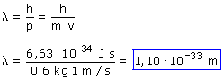

La fórmula de De Broglie relaciona el momento de
una partícula con la longitud de onda asociada:

Meditación
Con esta longitud de onda la bola se comportará como una onda frente
a objetos de tamaño corriente, como por ejemplo al pasar por una
puerta.
Como la longitud de onda es muchisímo menor que el tamaño
de la puerta no habrá efectos de difrac-ción y la bola atravesará
la puerta en línea recta igual que hace la luz al pasar por un
agujero grande
|